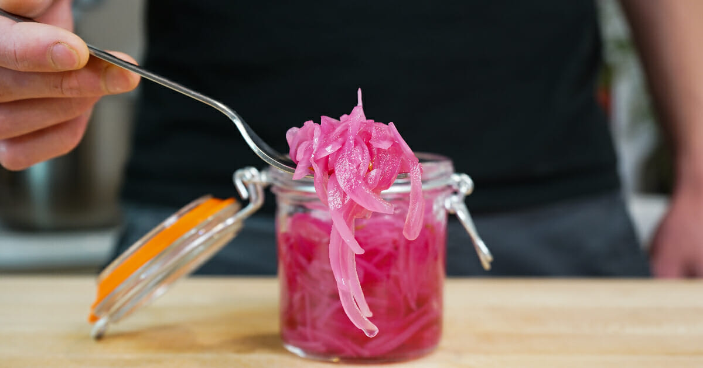

Recipe from Chef Jack Ovens Website
Pickled onions are a preserved vegetable typically made by soaking onions in a solution of vinegar, salt, and spices. Depending on the recipe, the onions are peeled and then immersed in the pickling solution, including sugar, various spices, and other flavourings. This recipe is slightly different from other recipes you'll see regarding the method.
The pickling process preserves the onions and imparts a tangy, slightly sour flavour and a crisp texture. They are often used as a condiment or garnish in sandwiches, salads, and tacos… or whatever you want.
Pickled onions should be stored in airtight containers in the refrigerator to maintain their freshness and flavor. The vinegar and salt in the pickling solution act as a preservative, allowing the onions to last for several weeks or even months in the fridge.
Always keep the onions submerged in the pickling liquid to ensure maximum freshness and flavour. This helps prevent the onions from drying out and becoming tough or rubbery.
If you’re making pickled onions at home, follow the recipe carefully and use sterilized jars or containers to prevent contamination. Once opened, the onions should be consumed within a few weeks for best results.